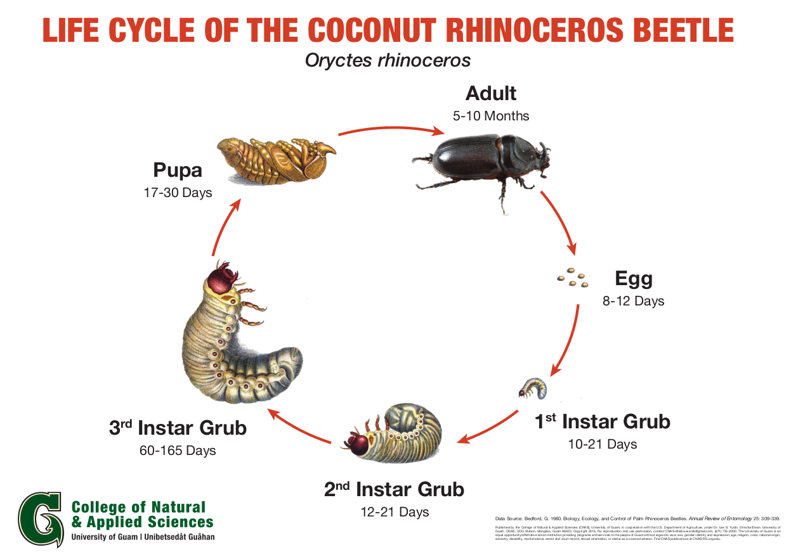
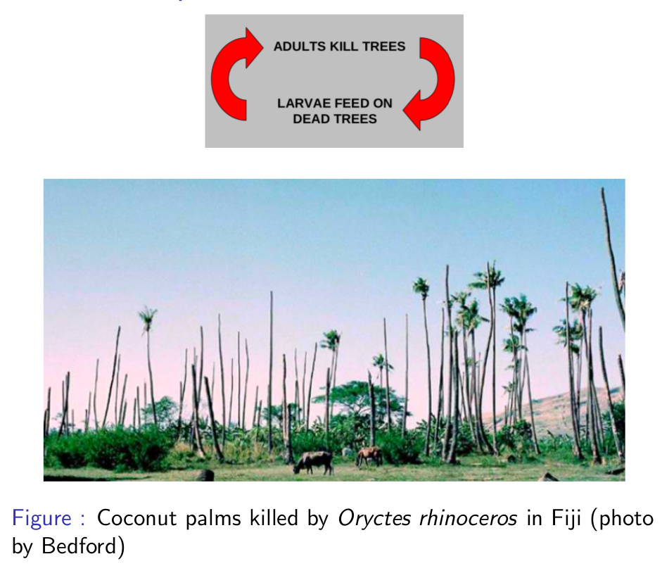
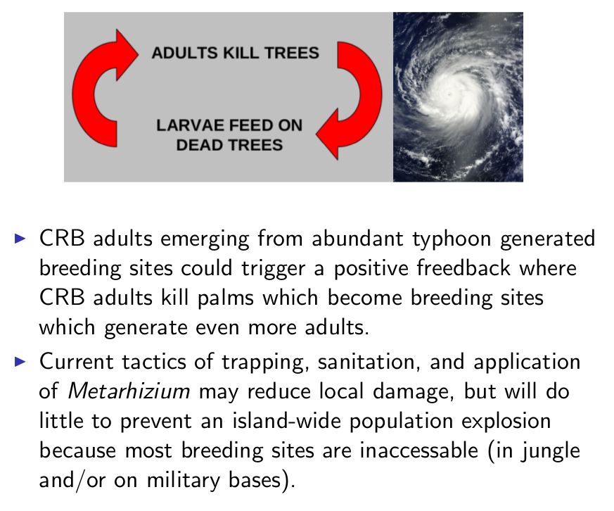

Impact of Climate Change on Coconut Rhinoceros Beetle Outbreaks in the Pacific
Aubrey Moore
College of Natural and Applied Sciences
University of Guam
Prepared for ...
Available online at
https://aubreymoore.github.io/crb-climate-connection/
* Eve
* map
* super beetle

* Population explosion

<